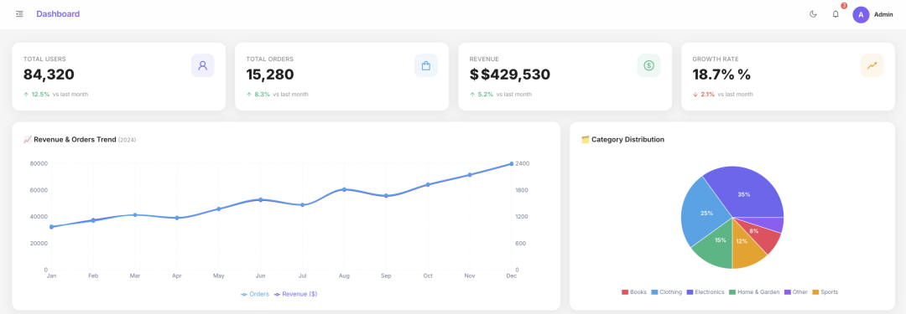
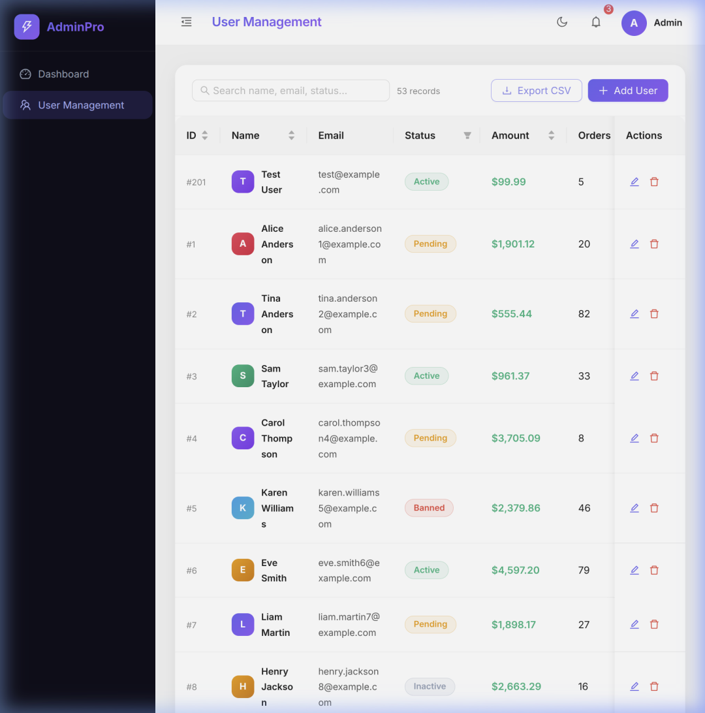

什么是 Vibe Coding？
一句话需求 → 完整产品
Dashboard Page: KPI cards, line chart, pie chart Table Management: searchable table, pagination, add/edit/delete, modal form editing UI: professional admin layout, sidebar, navbar with avatar, light/dark mode Data: mock data stored locally Tech: Vue + Element Plus or React + Ant Design Bonus: Export table data to CSV
后台页面：KPI 卡片、折线图、饼图 表格管理：可搜索表格、分页、添加/编辑/删除、模态表单编辑 用户界面：专业的后台管理布局、侧边栏、带头像的导航栏、浅色/深色模式 数据：本地存储的模拟数据 技术：Vue + Element Plus 或 React + Ant Design 附加功能：将表格数据导出为 CSV 文件）
演示视频
成果展示
仪表盘页面
4 个 KPI 卡片动态展示核心指标，悬停有上浮动画，双轴折线图呈现全年营收与订单趋势，饼图展示商品品类分布。

仪表盘截图

用户管理页面
52 条 mock 数据，实时搜索过滤，点击编辑弹出预填表单，支持添加、修改、删除，一键导出 CSV。
Review
用户管理截图
AI 是怎么完成这一切的？
Antigravity 不只是一个代码补全工具。它是一个完整的自主编程 Agent，整个过程分为三个阶段：
🧠 第一阶段：PLANNING（规划）
AI 先深入理解需求，选定技术栈（React + Vite + Ant Design + Recharts），然后自动生成一份完整的实施方案，包括：
每个文件的职责和接口设计 数据结构设计（mock 数据格式） 验证计划（如何测试每个功能）
用户只需审阅方案，一键确认即可。
⚙️ 第二阶段：EXECUTION（执行）
规划确认后，AI并行执行所有任务：
npm create vite 初始化项目 安装所有依赖（antd、recharts、react-router-dom...） 同时编写多个组件文件
整个过程完全无需人工干预，AI 自主处理了包括路由配置、主题切换 token、图表 API 用法等所有技术细节。
✅ 第三阶段：VERIFICATION（验证）
代码写完后，AI自动打开浏览器，像真人一样操作应用进行端到端验证：
全部测试通过，零人工干预。
技术栈一览
核心功能速览
Previous
Next
🏠 仪表盘
4 个 KPI 卡片 ：用户总数 / 订单数 / 营收 / 增长率 每张卡片显示环比变化（↑↓ 箭头 + 百分比） 双轴折线图 ：同时展示营收（$）与订单量趋势 饼图 ：品类销售占比分布，附百分比标签
Vibe Coding 的核心价值
传统开发模式下，完成此类项目需要：
选型调研 ：1~2 天 项目搭建 ：半天 组件开发 ：3~5 天 联调测试 ：1~2 天
总计：约 1~2 周
使用 Antigravity Vibe Coding：
描述需求 ：5 分钟 审阅计划 ：2 分钟 AI 自动完成 ：约 10 分钟
总计：不到 20 分钟
结语
Vibe Coding 不是未来，它是现在。
Antigravity 展示了 AI Agent 真正意义上的"端到端"能力：从理解自然语言需求，到规划架构，到并发编写代码，到浏览器自动验证——全程无缝衔接。
如果你还在逐行手写样板代码，是时候体验一下 Vibe Coding 的感觉了。🚀
本文章由 Antigravity AI Agent 全程自动生成，包含代码编写、测试验证与本文写作。